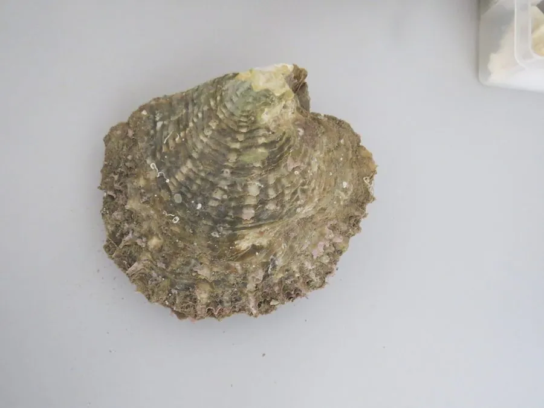

软体动物 · 动物界
珠母贝 Pinctada margaritifera

壳内缘漆黑的珍珠贝，能培育出著名的黑珍珠，分布于印度洋至太平洋热带海域，是法属波利尼西亚的支柱产业。
- 分类
- 门软体动物门纲双壳纲目牡蛎目科珍珠贝科属珠母贝属
- 栖息环境
- 热带珊瑚礁潟湖与礁坡的沙泥底质
- 地理分布
- 印度洋至太平洋热带海域，包括法属波利尼西亚、夏威夷
- 保护级别
- 多国实行采捕许可与配额，养殖依赖人工育苗
物种志
珠母贝的壳长可达二十厘米，壳形近圆形而略方，壳面灰黑至暗绿色，覆有细密的鳞片和放射状纹理，壳内面的珍珠层边缘呈深黑色，珠母贝之名由此而来。足部退化，靠足丝附着，闭壳肌发达。它分泌的珍珠层带有深色色素，因此能培育出灰黑至孔雀绿的黑珍珠，色泽随光线变化。
它分布于印度洋至太平洋的热带海域，从东非、红海到法属波利尼西亚、夏威夷都有，栖息在珊瑚礁潟湖和礁坡的沙泥底质，以滤食浮游生物为生。它是黑珍珠养殖的核心母贝，法属波利尼西亚的黑珍珠产业就建立在这个物种上，养殖周期三至五年。野生种群受捕捞和水质变化影响，各国普遍实行采捕许可与配额管理，养殖苗种多来自人工育苗。
形态与习性
- 壳长可达二十厘米，近圆形
- 壳缘珍珠层边缘深黑，故称黑唇贝
- 珍珠培育灰黑至孔雀绿的黑珍珠
- 食性滤食浮游生物
- 养殖养殖周期三至五年
- 管理采捕许可与配额制度
趣味知识
- 黑珍珠的颜色来自它壳缘的黑色素，珠子并非染出来的。
- 法属波利尼西亚的潟湖里，一排排吊养的珠母贝就是当地的经济命脉。
- 一颗黑珍珠养三五年才成，中途水温、饵料出一问题就前功尽弃。